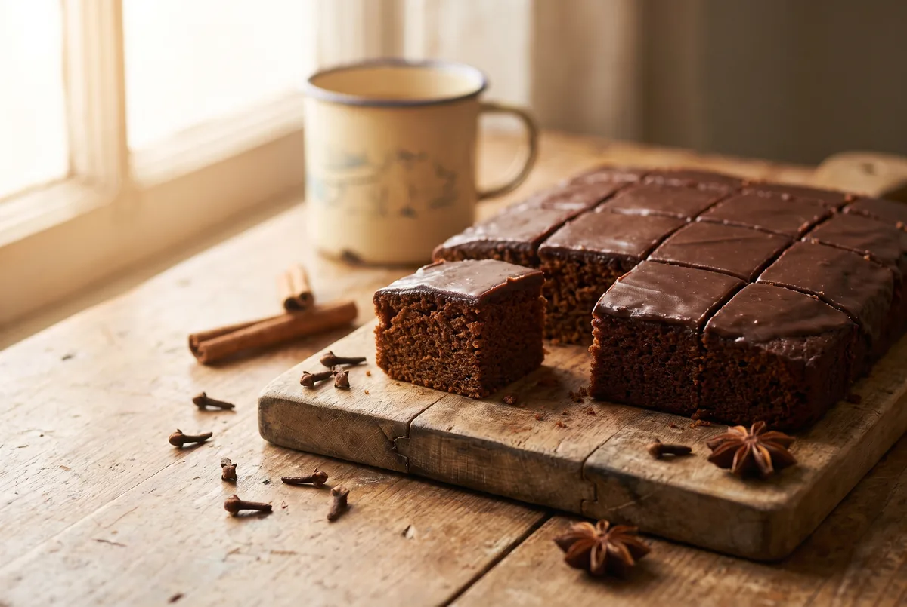

Homemade gingerbread (perník)
Cup-measure gingerbread you’ll love for its easy preparation and great taste. No scales needed — a mug is enough.
- Mix used
- Gluten-free vanilla pudding

Ingredients
- 3 cups plain flour (cup = 200 ml)
- 2 cups granulated sugar
- 1 cup oil
- 2 medium eggs
- 2 heaped tablespoons vanilla pudding powder
- 1 sachet gingerbread spice-leavening mix
- ½ sachet baking powder
- 250 ml milk (1¼ cups)
- Dutch-process cocoa to taste
Method
- Put all the ingredients into one bowl and mix thoroughly with an electric mixer so no lumps form.
- Pour the batter onto a greased baking tray dusted with coarse flour.
- Bake in an oven preheated to 180 °C for 20–25 minutes (depending on tray depth).
- Test with a wooden toothpick — it should come out clean, with no batter sticking.
Tip: add a little rum or rum flavouring, cinnamon, roughly chopped walnuts or chocolate to the batter.